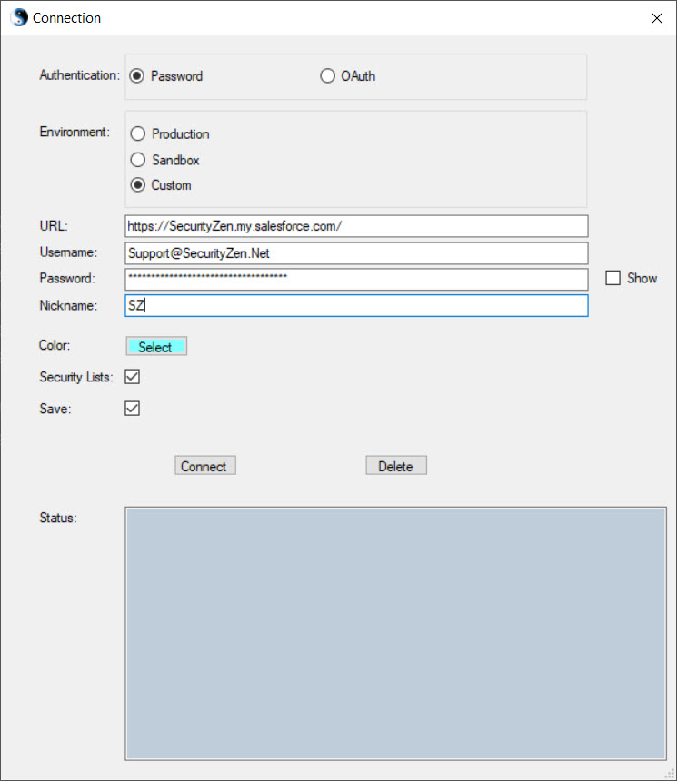

Connections: Connect...
|
Use this to create a new Connection to a Salesforce environment. The connection will be maintained until it is disconnected or a connection to a different environment is established. The nickname of the current connection is displayed in the top right corner of the workspace. |
|  |
Authentication Select between connecting using a Password or an OAuth connection. The following instructions are for using a Password. Environment Select whether this is a Production Environment, Sandbox Environment, or Environment with a Custom Domain name.
You will only be prompted to enter a URL when "Custom" Environment is selected. Username Enter your Salesforce Username. Password Enter your Salesforce Password. Depending on the location you are connecting from, you may need to provide your Password and Token. Selecting the Show checkbox displays the Password. Nickname Providing a Nickname helps identify where security files are retrieved from. Also, if you want to save this login information, the nickname is required. Color You may optionally select a color to be associated with this connection. Within the workspace, column headers will be displayed with the selected color. This is particularly useful when comparing security settings from different connections. Security Lists Normally, Security Zen retrieves a list of entities and security files upon connection to an environment. If you are using Security Zen to just create an ANT package or View Deploy Details, you can connect faster by skipping the retrieval of these entities and security files (i.e. uncheck this checkbox). Default is checked, so lists of entities and security files are retrieved upon connecting. Save Selecting the Save checkbox will save the connection information for easy access later on. WARNING: Usernames and passwords will be stored unencrypted on your machine. Do NOT save a connection if using Security Zen on a shared computer or if there is a risk that this information could be accessed. Connect Select the Connect button to establish a connection. This will populate the available selections within Configure for this particular environment. |
Connections: Saved
|
If you have saved connections, they will show as submenus under the Saved menu in order to provide easy access to these connections. Selecting a Saved connection prompts with the connection window where you can connect or modify parameters. |
Connections: Disconnect
|
This will disconnect if a connection is currently established. |
OAuth
|
Setting up OAuth If you are using the OAuth feature, a little set up is required within Salesforce first. Within Salesforce, go to Setup->Apps->App Manager. Select "New Connect App" button and fill in the following:
Select Save button Copy the Consumer Key from the Connected App you just configured within Salesforce. Within Security Zen, create a connection using the OAuth option and paste the Consumer Key. When connecting using the OAuth option, a browser window will be launched prompting you to enter your Salesforce username and password for the OAuth Login. |